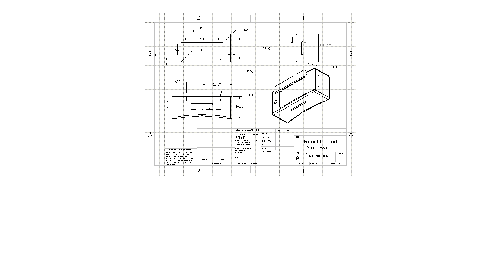
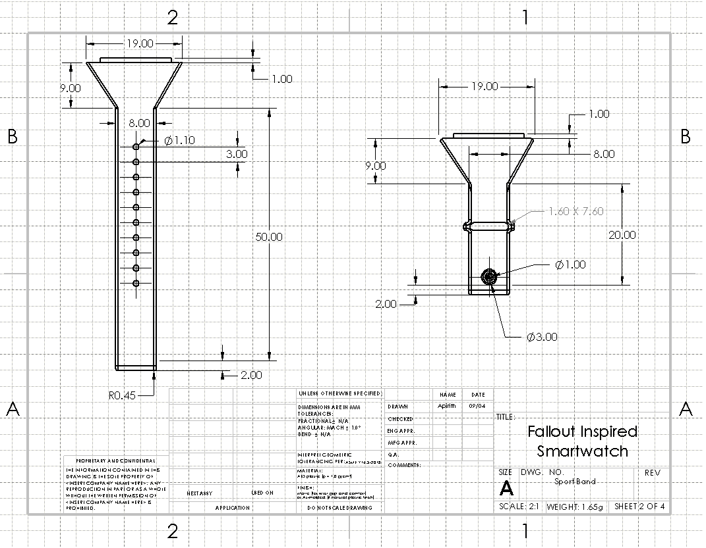
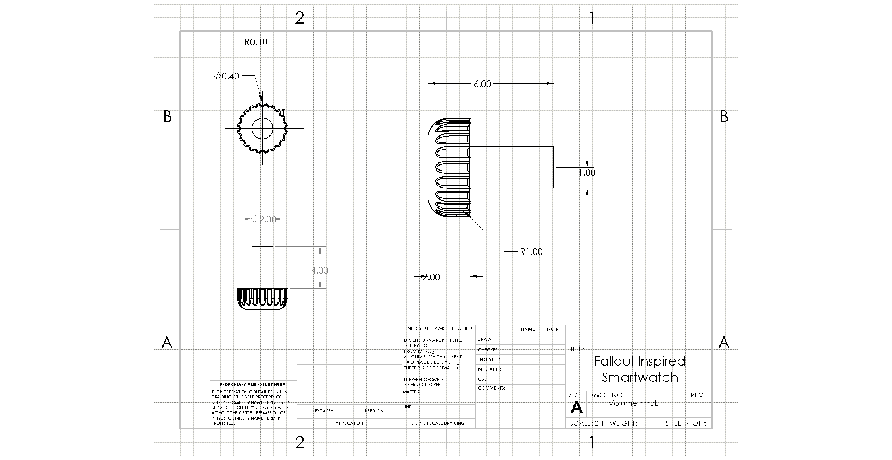
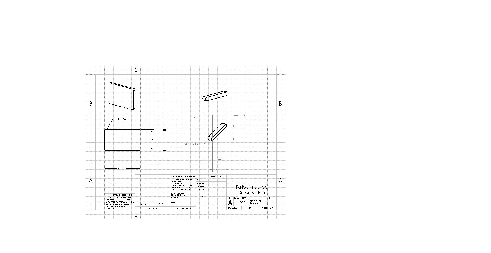
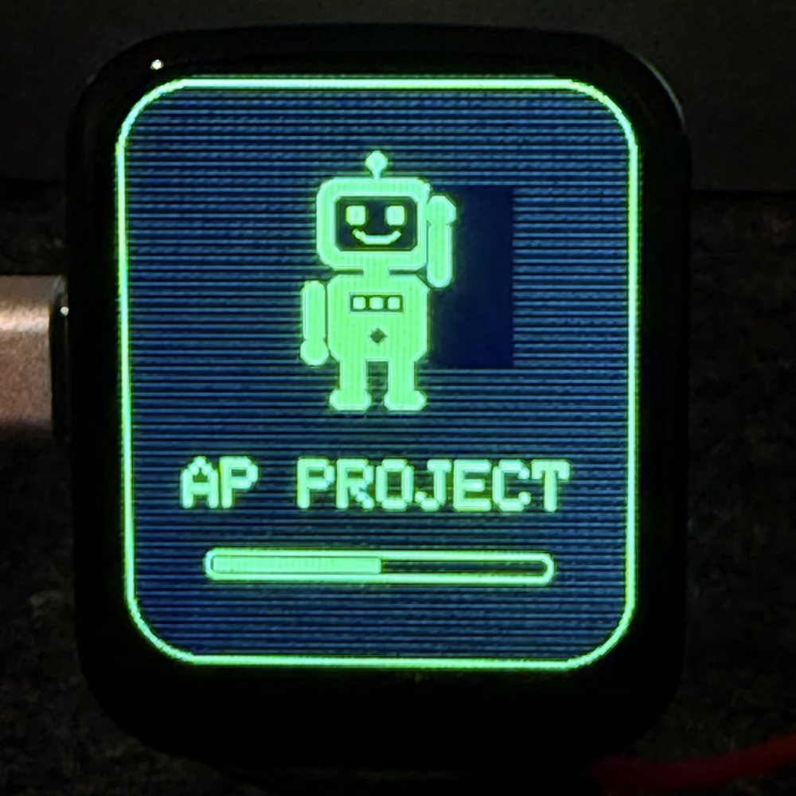
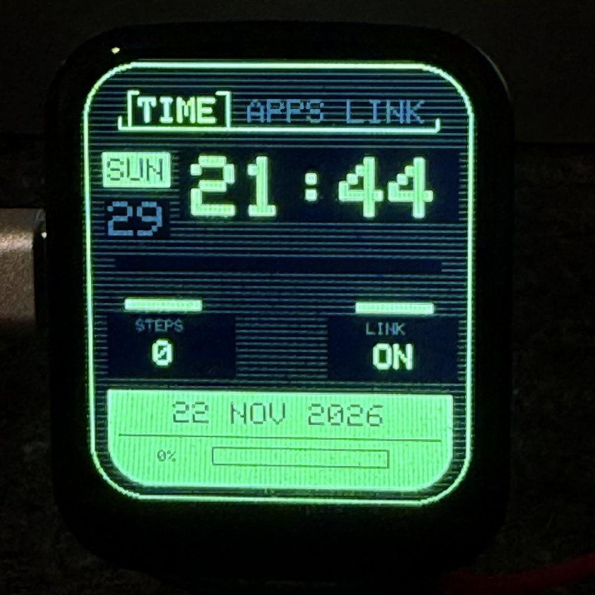
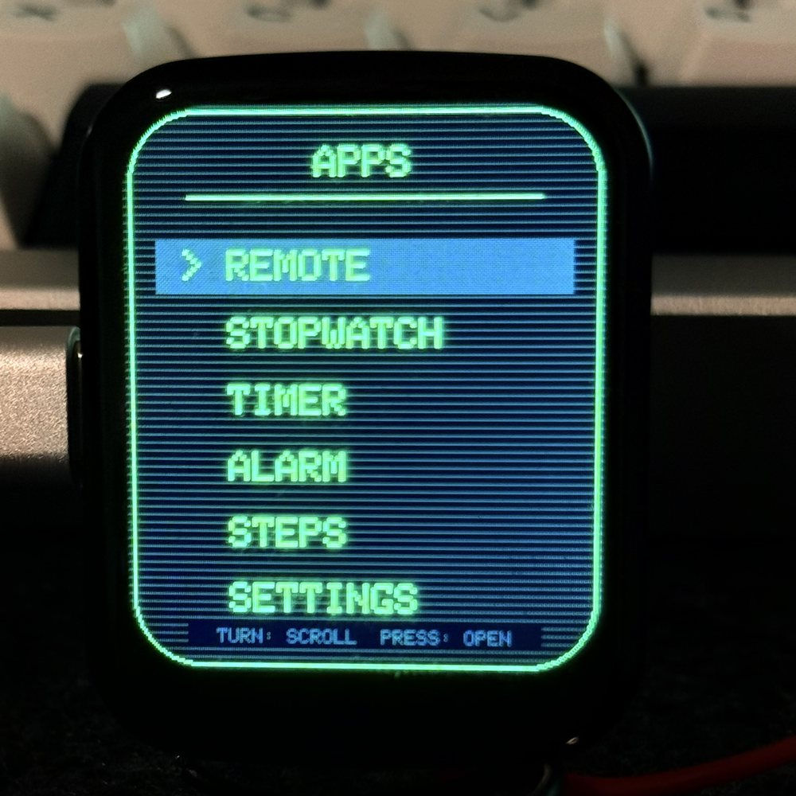

Solidworks
Mechanical concepts and product studies.
These projects focus on form, tolerancing, product narrative, and the kind of design decisions that turn a simple idea into something you can touch.
AP Project: Retro-terminal smartwatch
A working smartwatch prototype inspired by retro-futurist game hardware, built from an off-the-shelf display board, a custom-wired control knob, and firmware I developed in phases.
Drag to rotate · scroll the page as normal
Drawing sheets




Running firmware
Photos and a video of the prototype running its firmware.



The build
A working prototype, built in phases
The watch is built from an off-the-shelf display board, a custom-wired control knob, and firmware I wrote in three phases. Each phase shipped something that worked before the next one started, the same way I run projects as a TPM.
The hardware
- Core board: Waveshare ESP32-S3 with a 1.69" touch display (240 × 280), a motion sensor, a real-time clock, Wi-Fi and Bluetooth.
- Power: 300 mAh rechargeable LiPo battery, charged over USB-C.
- Control knob: EC11 rotary encoder with a push button, hand-soldered to the board's expansion pads.
Key lesson: my first CAD model was designed before choosing parts, so it couldn't fit real electronics. I reversed the process: select the components first, then design the enclosure around them.
Phase 1: Core watch
A watch that works entirely offline.
- Watch face with time, date, battery level and step count.
- Apps: stopwatch, timer, alarm, step counter and settings.
- Settings saved across restarts: brightness, screen timeout and wrist-raise.
- Battery-saving screen sleep that wakes on knob, button or wrist raise.
- One control scheme on every screen: turn to scroll, press to select, hold to go home.
Phase 2: Bluetooth remote
The knob became a controller for other devices. The watch pairs as a Bluetooth keyboard and media device, with six modes:
- Media: volume and play/pause.
- Tracks: skip songs and mute.
- Slides: advance presentations.
- Scroll: page scrolling.
- Zoom: zoom control.
- Call: mic mute for Teams, Zoom and Meet.
Phase 3: Design and experience
- Retro green-terminal interface with scanlines and a tabbed watch face.
- BIT, an original robot mascot who waves and winks on startup.
- CRT-style boot sequence: a power-on flash, then typed system checks showing live hardware status for the clock, motion sensor, Bluetooth and battery.
- Shutdown animation and sound design: key clicks, knob ticks, and screen-switch "thunks" through the onboard buzzer.
What I learned
- Design around constraints: real components set the dimensions, not the sketch.
- Debugging across layers: a missing ground jumper in the wiring, library and board-package version conflicts in the software, and rounded screen corners clipping the interface.
- Phased delivery: each phase shipped something working before the next one began.
Practice · Fundamentals
Mechanical design & product engineering
- Built SolidWorks models of consumer electronics inspired geometries (AirPods housings, iPhone case profiles) to develop foundational skills in 3D Solidworks, enclosure design, and parametric modeling.
- Created 2D drawings and basic blueprints, applying introductory GD&T concepts, dimensional constraints, and material annotations.
- Practiced core DFM/DFA principles such as draft angles, wall thickness awareness, simple snap fit geometries, and part simplification for manufacturability.
- Developed beginner level tolerance awareness through iterative sketch constraints, fit/clearance adjustments, and multi body part interactions.
- Explored basic mechanical analysis concepts: stress concentration, deformation risk, drop impact considerations, to understand failure modes in enclosure designs.
- Designed and printed 3D models using Tinkercad and consumer grade 3D printers, gaining hands on experience with prototyping workflows and physical part evaluation.
- Completed wire soldering for the Fallout inspired smartwatch assembly and now working on combining components and 3D printing remaining parts for the final prototype.